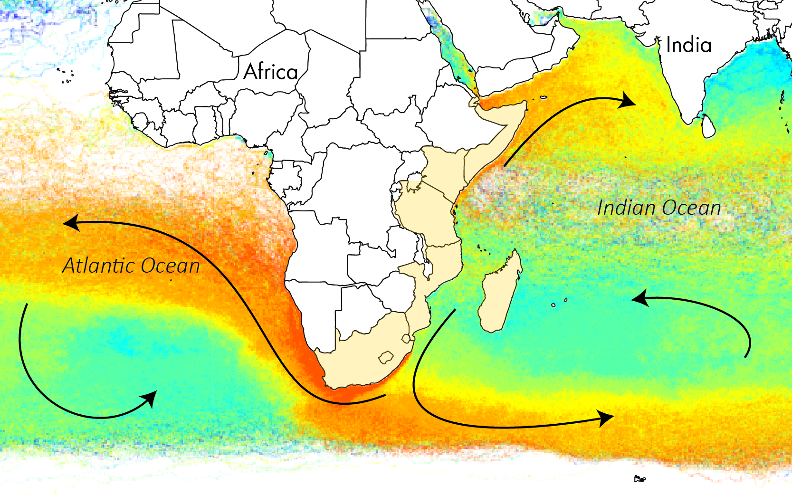
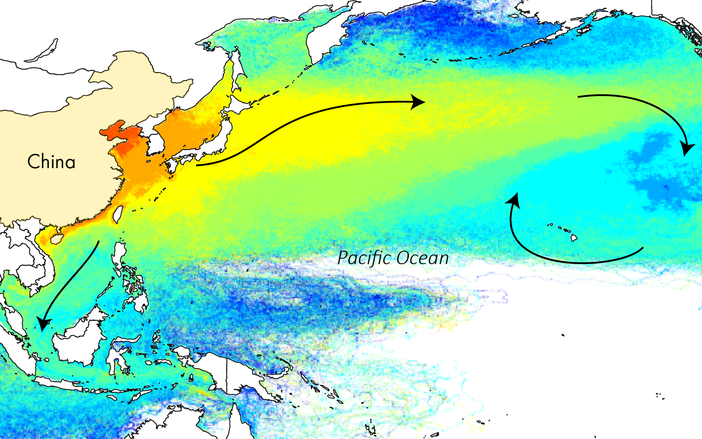

Sources, fate and effects of microplastics in the marine environment
The Modelling House was invited to participate in a series of conferences to debate on the sources, fate and effects of microplastics in the marine environment. The workshops were organised by the United Nations Environment Program (UNEP) and the Joint Group of Experts on the Scientific Aspects of Marine Environmental Protection (GESAMP). Following an initial assessment, the revised work programme for 2015-2018 has two main objectives: to carry out a comprehensive assessment of the topic with input from a wide range of disciplines over a 3-4 year timeline; and to provide input to the 2nd United Nations Environment Assembly (UNEA in May 2016) on topics of particular interest to UNEP and the United Nations Food and Agriculture Organisation (FAO).
Particularly, the Modelling House coordinated a team of international scientists to produce the second chapter of this assessment which focuses on the global sources of microplastics in the marine environment. The main outcomes of this assessment were:
- There are primary and secondary sources of microplastics. The distinction is based on whether the particles were originally manufactured to be that size (primary) or whether they have resulted from the breakdown of larger items (secondary).
- Fragmentation and degradation plays an essential role in the formation of secondary microplastics and is very poorly understood.
- Evidence of microplastics inputs to the environment are reported in every life cycles of a plastic product from producers, converters to sectoral or individual consumers and in waste management.
- Microplastics can enter the marine environment via riverine systems, coastlines, directly at sea on vessels and platforms or by wind-induced transport in the atmosphere.
- Methods of defining microplastics, sampling, and measurement vary considerably among studies, source sectors and geographical regions. If the collection of data could be synthetized across studies, a global assessment of microplastics sources quantifying the issue could be made available.
Following this assessment, the Modelling House participated in a regional analysis of sources and fate of microplastics using an in-house particle dispersal model. The study was led by Australia’s Commonwealth Scientific and Industrial Research Organisation (CSIRO) and aims at targeting areas of concern for the release and the accumulation of microplastics at sea during the United Nations Environmental Assembly in May 2016.
Average age of model particles released in South-east Asia
Average age of model particles released in East Africa
Average age of model particles released in China